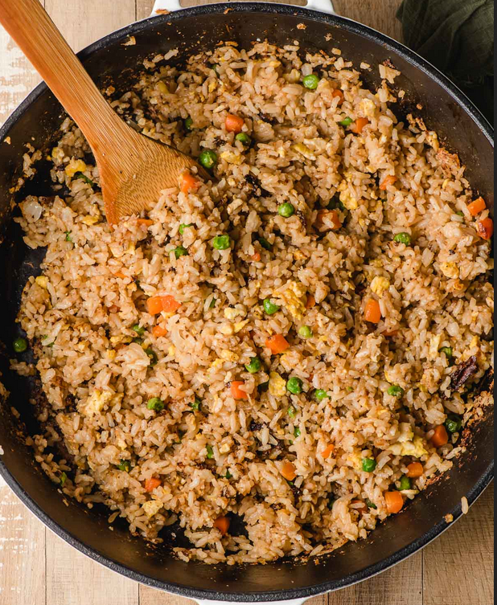

Fried Rice Recipe

Description
The classic dish at any Japanese steak house.
Hibachi Fried Rice is a well-seasoned, crispy
variant of the household staple. Not only is it
quick and easy to prepare, it's the perfect dish
for leftovers, or to pair with other hibachi classics.
Ingredients
- 3 Tablespoons unsalted butter
- 1/2 medium yellow onion (diced)
- 3/4 cup frozen peas and carrots
- 1 teaspoon minced garlic
- 2 eggs
- 4 cups cooked and cooled white rice
- Salt and pepper
- 1/3 cup hibachi master sauce *See note
- 1/2-1 Tablespoon sesame oil (to taste)
- Chopped green onions (optional)
Instructions
- In a large, heavy duty skillet, melt 1 1/2
tablespoons of butter over medium heat.
Add the onion and saute until starting to
soften, about three minutes.
- Stir in the frozen vegetables and cook until
heated through, another few minutes. Stir in
the garlic and saute until fragrant, about
30 seconds.
- Push the veggie mixture to the side, and crack
two eggs into the pan. Use a spatula to scramble
the egg and cook, stirring occasionally, chopping
them into smaller pieces, until mostly set.
- Push the eggs to the side, and melt the
remaining butter. Turn the heat up to high and
then add the cooked rice. Spread it over the
pan and allow it to cook undisturbed for a few
minutes.
- Stir the veggies and egg into the rice, and season
everything lightly with salt and pepper.
- Pour the hibachi sauce into the pan and cook
stirring often and scraping the bottom of the pan,
until the sauce is absorbed. Drizzle in the sesame
oil and stir until combined.
- serve the rice with chopped green onions, if desired,
and hibachi steak and veggies on the side.
Notes
- See the original recipe
Here
- Master hibachi sauce recipe can be found
Here.